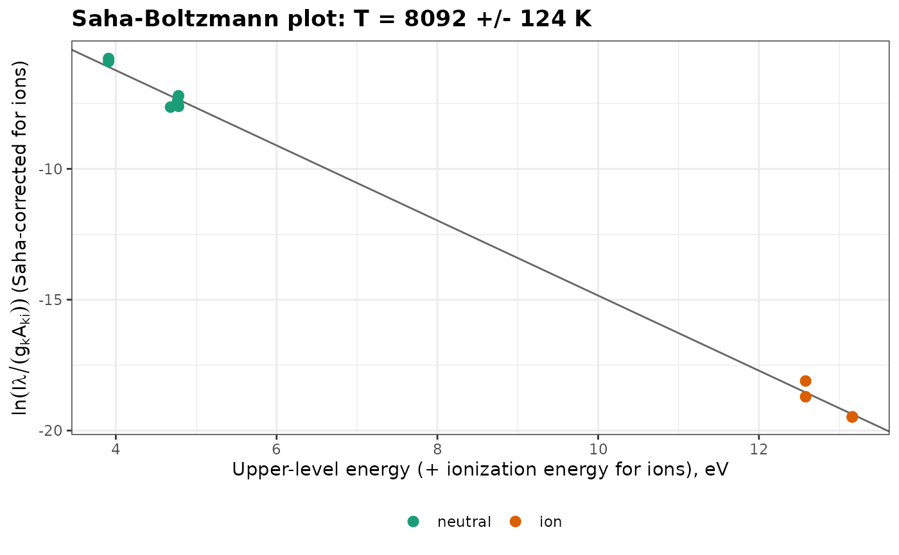

Estimates the temperature of a plasma in LTE from lines of the neutral atom and of the singly charged ion of the same element, by a Saha-Boltzmann plot.
Usage
saha_boltzmann(
lines,
ionization_energy,
electron_density,
units = "energy",
max_iter = 100,
tol = 1e-08
)Arguments
- lines
A data frame as for
boltzmann(), with an additional columnstage: 1 for lines of the neutral atom, 2 for lines of the singly charged ion.- ionization_energy
The ionization energy of the neutral atom, in eV.
- electron_density
The electron density, in cm\(^{-3}\), for example from
electron_density().- units
The units of
intensity:"energy"(default) or"photons".- max_iter
The maximum number of iterations. Default is 100.
- tol
The relative tolerance on the temperature. Default is 1e-8.
Value
An object of class specproc_boltzmann, as for
boltzmann(), with the number of iterations in iterations.
Details
Lines of the ion are placed on the Boltzmann plot of the neutral atom with the Saha equation. For ionic lines, the abscissa becomes \(E_k + E_{ion}\) and the ordinate $$y^* = \ln\frac{I\lambda}{g_k A_{ki}} - \ln\left(\frac{2}{N_e}\left(\frac{2\pi m_e k_B T}{h^2}\right)^{3/2}\right)$$ where \(E_{ion}\) is the ionization energy of the neutral atom and \(N_e\) the electron density (Aguilera and Aragón, 2004). Because the correction depends on \(T\), the fit is iterated until the temperature converges. The lowering of the ionization energy in the plasma is neglected. The much wider energy range than in a Boltzmann plot of a single species gives a more precise temperature.
References
Aguilera, J.A., Aragón, C. (2004). Characterization of a laser-induced plasma by spatially resolved spectroscopy of neutral atom and ion emissions: comparison of local and spatially integrated measurements. Spectrochimica Acta Part B, 59(12):1861-1876.
Examples
data(forageLIBS)
mean_spectrum <- colMeans(forageLIBS[-(1:14)])
# calcium lines, with their atomic data from the NIST database
atomic <- data.frame(
species = c(rep("Ca I", 6), rep("Ca II", 4)),
stage = c(rep(1, 6), rep(2, 4)),
wavelength = c(428.301, 430.253, 431.865, 445.478, 612.222, 616.217,
315.887, 317.933, 370.603, 373.690),
Aki = c(4.34e7, 1.36e8, 7.40e7, 8.70e7, 2.87e7, 4.77e7, 3.10e8, 3.60e8, 8.80e7, 1.70e8),
gk = c(5, 5, 3, 7, 3, 3, 4, 6, 2, 2),
Ek = c(4.780, 4.780, 4.769, 4.681, 3.910, 3.910, 7.047, 7.050, 6.468, 6.468)
)
lines <- line_intensities(mean_spectrum, atomic, baseline = TRUE)
# with the ionization energy of Ca I (eV) and the electron density (cm-3)
fit <- saha_boltzmann(lines, ionization_energy = 6.113, electron_density = 1.9e17)
fit
#> Saha-Boltzmann plot (10 lines)
#>
#> Temperature: 8092 +/- 124 K
#> R-squared: 0.9981
#> Ne: 1.9e+17 cm-3
plot_boltzmann(fit)
